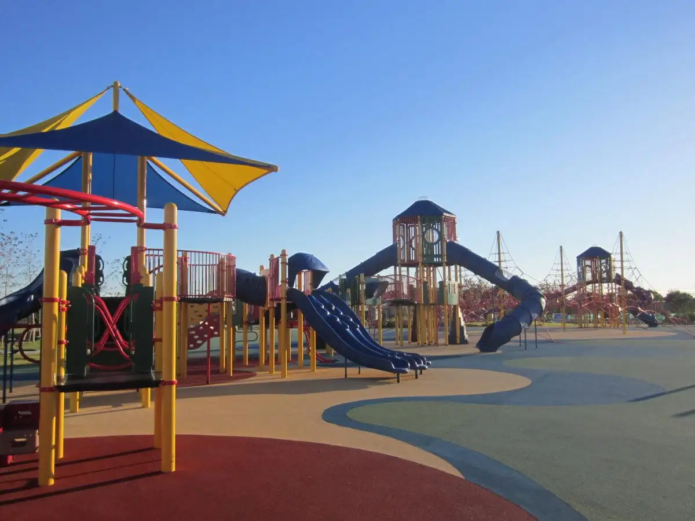
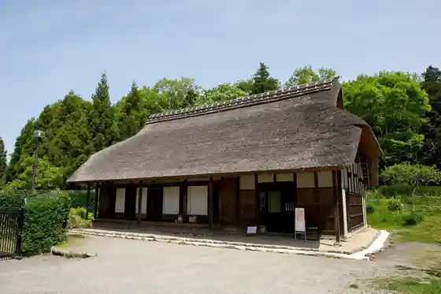
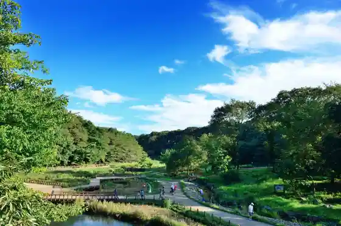
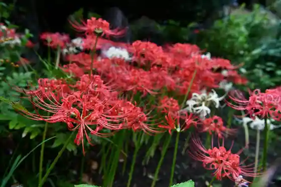
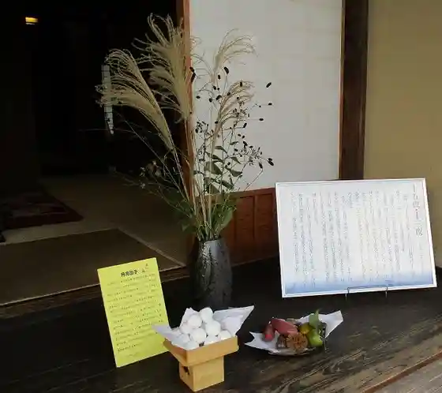

Japan / Kanagawa / Yamatoshi
Yamatoshi
Yamatoshi · Kanagawa
Yamatoshi
Highlighted on the Kanagawa map.

Sights
Yamatoshi Kyodo Minka Sono (Izumi no Moriuchi)
Yamatoshi, Kanagawa · 046-260-5790 · Official / source link

Izumi Forest
Yamatoshi, Kanagawa · 046-264-6633 · Official / source link

Seiryu Yama Josen Tera
Yamatoshi, Kanagawa · 046-267-8789 · Official / source link

Yamatoshi Shimotsuruma Furusato Kan
Yamatoshi, Kanagawa · 046-272-6556 · Official / source link

Hikichi Kawa Sembonzakura
Yamatoshi, Kanagawa · Official / source link
Fureai Forest
Yamatoshi, Kanagawa · 046-263-8711 · Official / source link
F Mari no Su Seijo Ishii Park (Yamatoshi Yutori Forest)
Yamatoshi, Kanagawa · Official / source link
Yamatoshi Bunka Sozo Kyoten Shiriusu Okunai Kodomo Plaza
Yamatoshi, Kanagawa · 046-259-7592 · Official / source link
Yamatoshi Bunka Sozo Kyoten Shiriusu Yamato Geijutsu Bunka Horu
Yamatoshi, Kanagawa · 046-259-7591 · Official / source link
Yamatoshi Bunka Sozo Kyoten Shiriusu Yamatoshi Ritsu Library
Yamatoshi, Kanagawa · 046-263-0211 · Official / source link
Gaisoota Park Hikichi Dai (Hikichi Dai Onsui Puru)
Yamatoshi, Kanagawa · 046-260-5757 · Official / source link